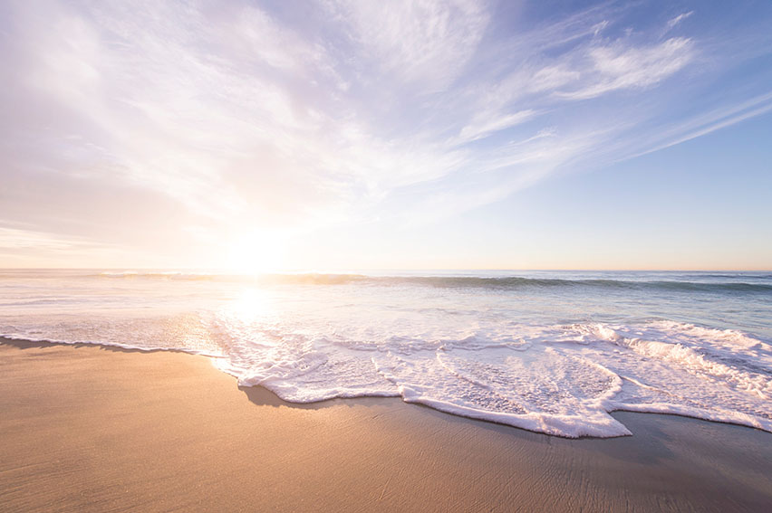
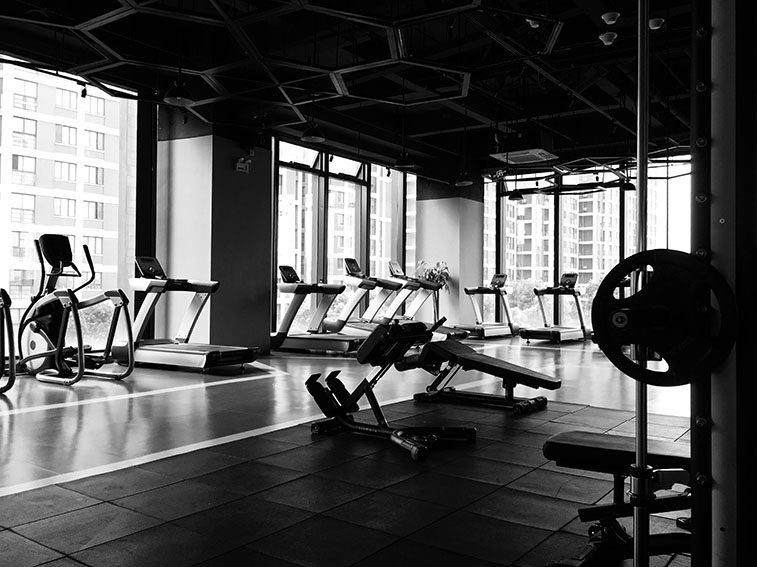
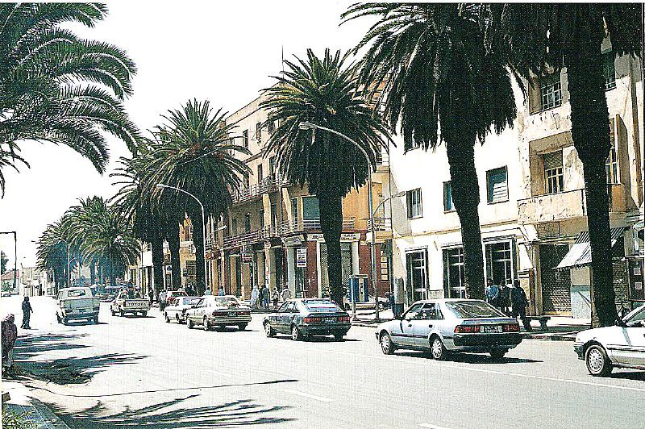
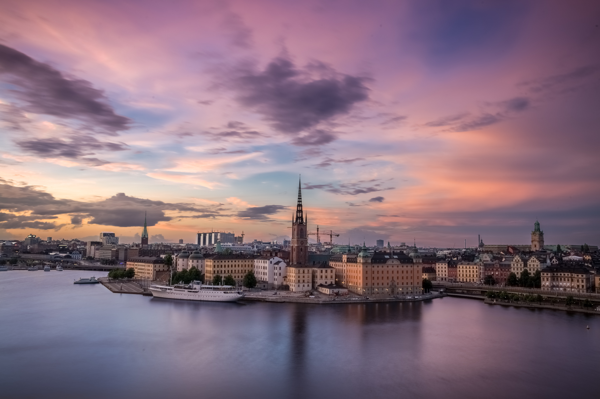
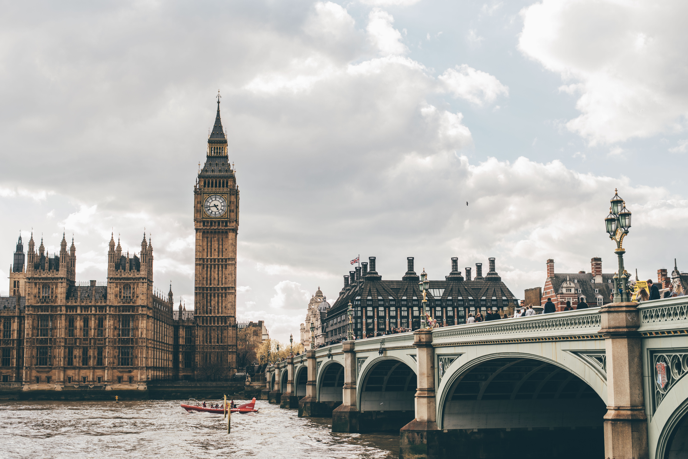

My name is Yordanos. According to ,Google translationthis is how you write my name in arabic: يوردانس (b.t.w you read it in arabic right to left). Arabic is one of the many languages spoken in Eritrea, however Tirgrinya is the official language. I am from Eritrea but I was raised in Sweden. My background is in administration. I studied some Web Design in school in Sweden. However I am new to the field of web development.
Fun facts about me: I love tea, but some mornings I just want some N8H10N402 (in other words caffeine—one cup will do). Whether I drink tea or coffee I always make sure to drink a lot of H2O, i.e water—lots of water during the day.
Hobbies


Languages I am fluent in
Tigrinya
Swedish
English
Places I have lived in
Asmara
Stockholm
London
Toronto



There is so much to share about each city. I thought I share what make each city unique.
It is important to state that I lived in Asmara only as a child and therefore I do not know much about the city. As a consequence I had to research the city online. I also used web resources to gather information about the other cities featured here. But Stockholm is the city I lived in the longest out all four cities and hence the city I know best.
Asmara
Asmara is the capital of Eritrea and the largest city in the country. This is what Wikipedia had to say abou the city Asmara: [Asmara] is the capital and most populous city of Eritrea, in the country's Central Region. It sits at an elevation of 2,325 metres (7,628 ft), making it the sixth highest capital in the world by altitude. The city is located at the tip of an escarpment that is both the northwestern edge of the Eritrean Highlands and the Great Rift Valley in neighbouring Ethiopia. In 2017, the city was declared as a UNESCO World Heritage Site for its well-preserved modernist architecture.
Stockholm
Stockholm is the capital of Sweden, the largest city and the most populous urban area of the country. It is know for its spectacular beauty. According to Encyclopaedia Britannica it is due to its location... Stockholm is located at the junction of Lake Mälar (Mälaren) and Salt Bay (Saltsjön), an arm of the Baltic Sea, opposite the Gulf of Finland. The city is built upon numerous islands as well as the mainland of Uppland and Södermanland. By virtue of its location, Stockholm is regarded as one of the most beautiful capital cities in the world.
Fun facts about Stockholm
London
London is the capital of England and United Kingdom and the largets city of the country. There are many historical landmark sites in the London. Four sites in specific have been recognised to be World Heritage Sites by the UNESCO. According to wikipedia these sites are ... the Tower of London; Kew Gardens; the site comprising the Palace of Westminster, Westminster Abbey, and St Margaret's Church; and the historic settlement in Greenwich where the Royal Observatory, Greenwich defines the Prime Meridian and Greenwich Mean Time.
Fun facts about London
Toronto
Toronto the most populous city in Canada and is the capital of the province of Ontario. The city has an important location which gives it in leverage in the internationl trade. According to Encyclopaedia Britannica its location on the northwestern shore of Lake Ontario, which forms part of the border between Canada and the United States, and its access to Atlantic shipping via the St. Lawrence Seaway and to major U.S. industrial centres via the Great Lakes have enabled Toronto to become an important international trading centre.
Fun facts about Toronto
Student Life
It has been almost a month since I moved to Toronto from Sweden to study. On the 6 of January we had the first class in Web Design and Development. It has been nothing but exciting to learn all the new things in our program, and to explore this city and country. I am looking forward to my new journey. We are on our second week and it is our second class in all the courses. We have handed in several in-class exercises.
Expectations of the program
The hope is to make dynamic, creative and aesthetic websites and applications. To build a strong portfolio. To be a career-ready front-end developer.